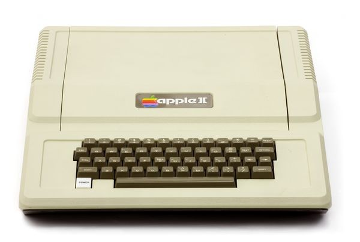
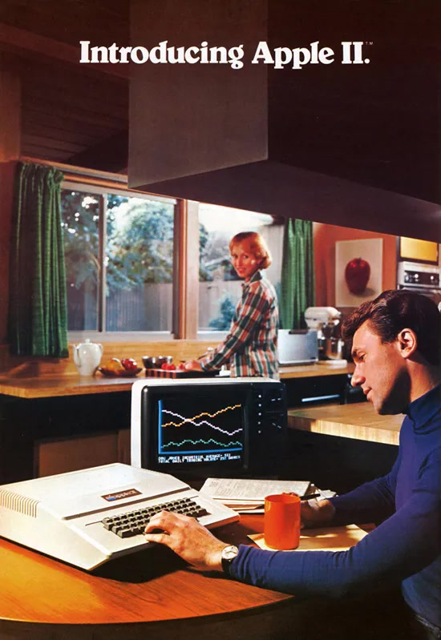

In the same year of 1977 another very successful computer launched right beside the PET, setting this company in stone and establishing them into the world of computing and technology. Now with a case, keyboard and the first computer to come with a color display the Apple II launched with massive success. The Apple II launched with the program VisiCalc which was a spreadsheet program that was now affordable and accessible and the application very much contributed towards the popularity and profit of the Apple II. Apple themselves claimed in April of 1977 that more people had chosen Apple II than all other personal computers combined. Businesses bought Apple II computers just for the VisiCalc program and by 1984 2 million Apple II computers were sold.
 The Apple II quickly took businesses by storm and slowly started to invade the homes of many families warming up to the idea of owning a home computer. Apple saw this idea of taking the computer out of the office and into the homes of many and pushed its advertising toward putting the Apple II into the houses of many. Claiming it could teach your children and even play your favorite game PONG. The Apple II pioneered the idea of owning a home computer and brought it into the homes of many.